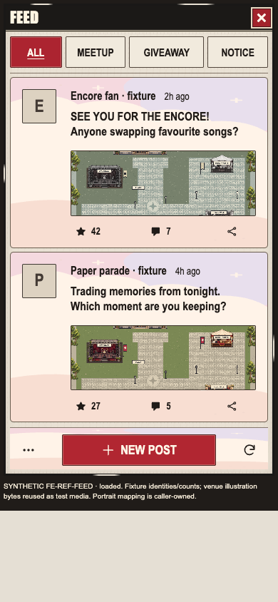
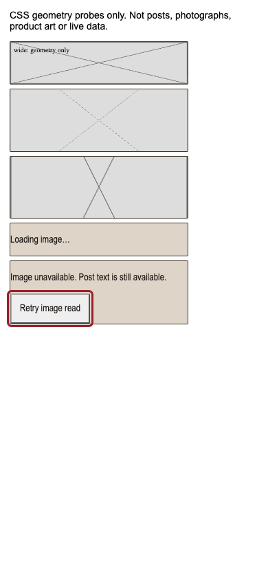
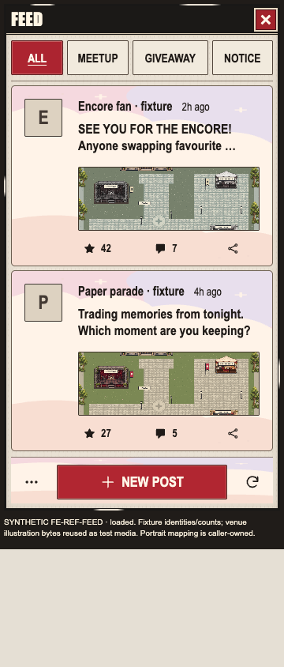
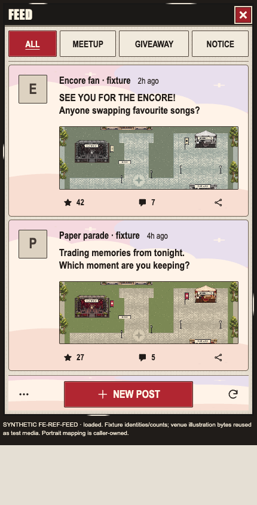

Bounded fixture checks passed. Full photo parity remains open. Actual Feed captures use existing synthetic rows and venue illustrations; SVGs are separate neutral geometry probes. Root reference-thumbnail fixture was not run in this allocation.



